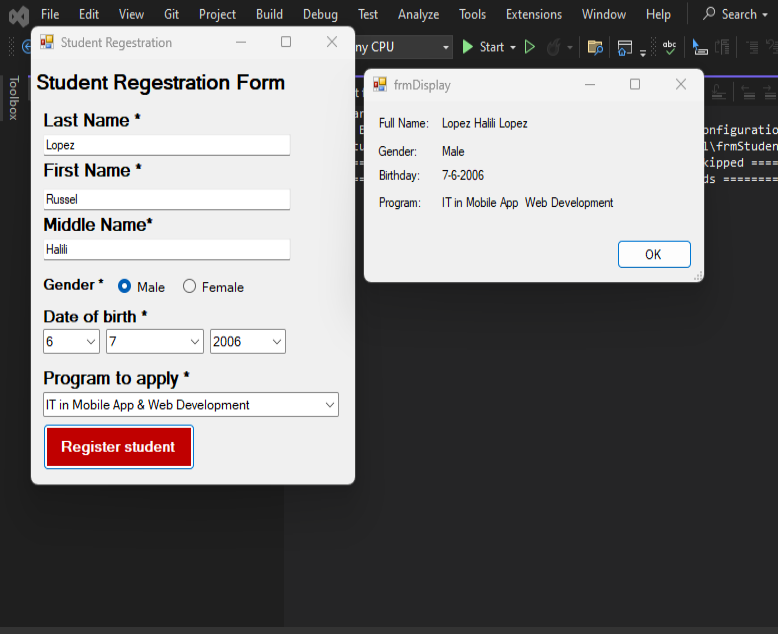
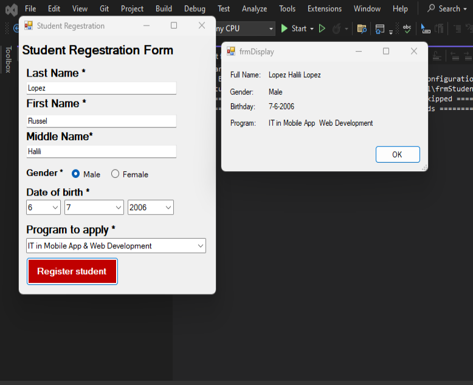

Blog
Here are some blog posts.
Welcome to TechInsights, your go-to destination for a captivating journey through the ever-evolving landscape of technology. As we delve into the realms of innovation, coding, and the digital future, join me, Russell Lopez, your guide on this tech adventure. From the latest breakthroughs to practical tips and everything in between, TechInsights is your one-stop hub for all things tech-related.
1. Unveiling the Future:
Top Tech Trends of 2024
In our first article, we'll explore the cutting-edge technologies that are shaping the future. From artificial intelligence and
augmented reality to the Internet of Things, discover how these trends are revolutionizing the way we live, work, and connect.
2. Coding Chronicles:
A Journey into Python Programming
Embark on a coding odyssey as we unravel the power of Python. Whether you're a seasoned developer or just starting, this article
will guide you through the basics, advanced features, and real-world applications of one of the most versatile programming languages.
3. The UX Revolution:
Crafting Seamless Digital Experiences
User experience (UX) is at the forefront of technology design. Dive into the principles of UX and learn how to create engaging
and user-friendly interfaces. From wireframing to prototyping, discover the secrets to designing digital experiences that leave a lasting impression.
4. Mastering Mobile App Development:
A Beginner's Guide
Are you fascinated by mobile apps? In this article, we'll break down the essential steps to kickstart your journey into mobile app development.
From choosing the right platform to understanding the app development life cycle, this guide is your key to turning app ideas into reality.
5. Tech Gadgets Galore:
Must-Haves for 2024
Explore the latest and greatest tech gadgets that are redefining our daily lives. From smart home devices to wearable tech,
find out which gadgets are making waves in 2024 and why they should be on your radar.

 
